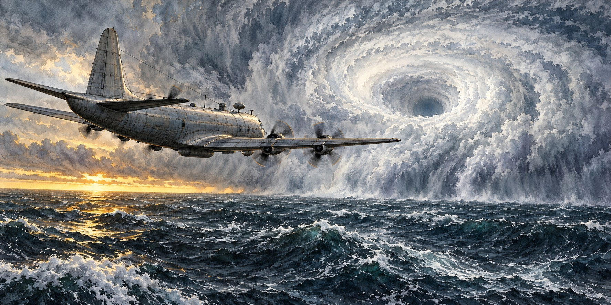

How Hurricane Forecasting Changed Florida
From Ship Reports and Storm Flags to Satellites and Hurricane Hunters

In September 1935, pilot Leonard Povey flew over the Florida Straits and observed the hurricane approaching the Keys. The flight is remembered as an early example of using aircraft to gather storm information. It belongs to a long history of attempts to see farther ahead, from coastal observers and ship reports to satellites and reconnaissance aircraft.
A Priest in Havana, and Ships That Vanished
The earliest organized hurricane warning effort in the Atlantic began in Havana, where Jesuit priest and meteorologist Father Benito Viñes started a systematic hurricane warning service in the 1870s. In the United States, the Army Signal Service developed its own warning system. Congress authorized a civilian Weather Bureau in 1890; it began operations on July 1, 1891.
For decades the main source of hurricane information was ships that happened to meet a storm. That left a blind spot: once a captain reported a hurricane, the sensible choice was to steer away, leaving forecasters with no further reports. These “lost hurricanes” could reach land with little warning.
Galveston Forces a Reckoning
In September 1900 a hurricane struck Galveston, Texas, with virtually no effective warning, killing an estimated six thousand to twelve thousand people, the deadliest natural disaster in American history. The Weather Bureau soon set up a hurricane warning office at New Orleans for Gulf storms. In 1902 the Hurricane Warning Service consolidated in Washington, and shipboard radio, introduced in 1905, sped up reports from sea.
Florida Gets Its Own Office
In 1935 the federal government set up a hurricane warning program with regional offices in Jacksonville, Washington, San Juan and New Orleans. They issued advisories every six hours and separated storm-force from hurricane-force warnings for the first time, a structure that still underlies today’s watches and warnings.
A Dare That Changed Everything
In July 1943, Colonel Joseph Duckworth, stationed in Texas, accepted a dare from British pilots who doubted an AT-6 trainer could survive flying into a hurricane. He flew into the eye and out, then, at a weather officer’s urging, flew back through to gather observations. The flight showed that aircraft could survive a hurricane’s core, opening the way to organized Hurricane Hunter reconnaissance.
Research, Satellites and the Hurricane Center
The destructive 1954 season led to the National Hurricane Research Project in 1955. Robert Simpson directed it, and its first base in 1956 was Morrison Air Force Base in West Palm Beach, using specially instrumented Air Force aircraft. In 1959 the project moved to Miami and joined the city’s forecast office, a step toward the National Hurricane Center.
The 1960s brought weather satellites, including Tiros, Nimbus and later the GOES series, giving forecasters a continuous overhead view of the ocean for the first time. Storms that once approached nearly unseen could now be tracked from formation.
From One Day to Five
The result shows in forecast length. In 1954 official hurricane track forecasts reached one day ahead; by 1961, two; by 1964, three; and by 2003, five days, the window still used today. Frank Marks, a former director of NOAA’s Hurricane Research Division, said: “In the 40 years I was working, I saw forecast skill improve dramatically.”
Today GOES satellites watch every Atlantic system, polar-orbiting satellites pass over storms about twice daily, and NOAA and Air Force Reserve Hurricane Hunter aircraft fly into storms to drop instruments. NOAA’s hurricane aircraft fleet is based at the Aircraft Operations Center in Lakeland, Florida.
Quick Facts
| First warning service | 1870s, Havana, Father Benito Viñes |
|---|---|
| Galveston | September 1900; led to the first Gulf Coast warning office at New Orleans |
| Regional offices | 1935: Jacksonville, Washington, San Juan, New Orleans |
| First aerial reconnaissance | September 1935, Leonard Povey |
| Wartime breakthrough | 1943, Col. Joseph Duckworth flies an AT-6 into a hurricane |
| Research project | National Hurricane Research Project, 1955; West Palm Beach base 1956 |
| Forecast horizon | 1 day (1954); 3 days (1964); 5 days (2003) |
| Aircraft base | Aircraft Operations Center, Lakeland |
Did You Know?
Ships once avoided hurricanes so well that forecasters lost track of them.
The first Hurricane Research Project base was in West Palm Beach.
Forecast track length went from one day in 1954 to five days in 2003.
Vocabulary
Reconnaissance: flying into or near a storm to measure it directly.
Dropsonde: an instrument package dropped from an aircraft to measure wind, pressure and temperature.
Cone of uncertainty: the area showing where a storm’s center may travel.
Discussion Questions
How did each new tool close a gap left by the last one?
Why did better forecasts not automatically mean better outcomes?
Related Articles
FLH-0005 — The Labor Day Hurricane of 1935
FLH-0021 — Hurricane Warnings Before Radio
FLH-0020 — How Florida Pioneers Predicted Storms
FLH-0011 — Hurricane Irma (2017)
FLH-0012 — Hurricane Ian (2022)
Sources
Wikipedia. “History of Atlantic Hurricane Warnings.”
HISTORY. “Hurricane Science: Key Advances in Tracking Deadly Storms.” (quotes Frank Marks). history.com
NOAA. “Hurricane Forecasting” and “Hurricane Season: A Media Resource Guide.” noaa.gov
National Weather Service Heritage Virtual Lab. “Then and Now: The National Hurricane Center.” vlab.noaa.gov
National Hurricane Center. “NHC Data Archive.” nhc.noaa.gov
NOAA — National Weather Service history